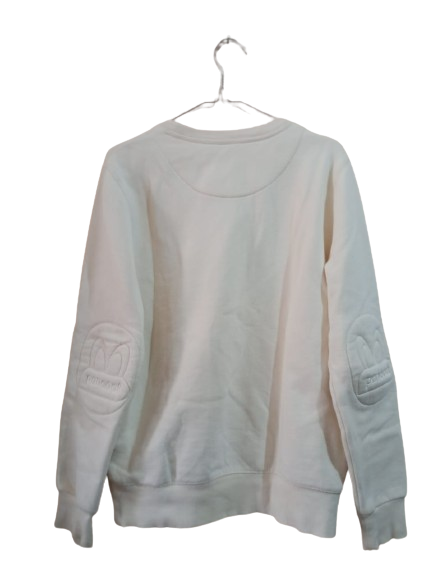
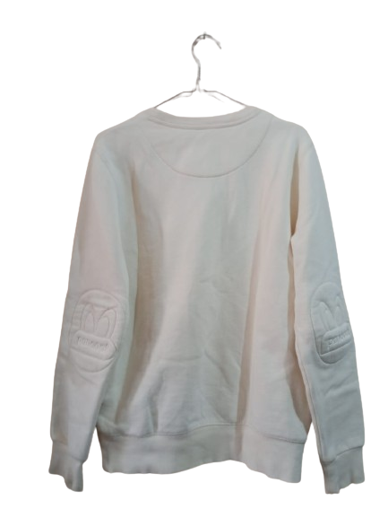

Crewneck Pancoat Roudolph
Harga: Rp 180,000 Rp 220,000
Deskripsi: Size Small Nomines, Ada Saku Sampingnya
Crewneck Pancoat Roudolph adalah pilihan sempurna untuk gaya kasual yang tetap stylish dan nyaman. Dirancang dengan perhatian terhadap detail dan kualitas bahan, sweater ini menawarkan kombinasi yang sempurna antara gaya kontemporer dan kenyamanan yang luar biasa.
Dibuat dari bahan berkualitas tinggi, Crewneck Pancoat Roudolph memberikan sentuhan lembut pada kulit Anda, menjadikannya pilihan yang sangat useable sepanjang tahun. Desainnya yang bersih dan minimalis membuatnya cocok untuk berbagai kesempatan, baik itu untuk hangout santai, pertemuan teman, atau bahkan acara semi-formal.
Dengan potongan yang pas dan nyaman, sweater ini memberikan tampilan yang rapi dan tetap memberikan keleluasaan gerak. Detail logo Pancoat yang halus memberikan sentuhan branding yang elegan tanpa berlebihan, menciptakan kesan yang chic namun santai.
Crewneck Pancoat Roudolph juga sangat versatile dalam hal gaya. Anda dapat dengan mudah mengkombinasikannya dengan celana jeans untuk tampilan kasual yang effortlessly cool, atau memadukannya dengan celana formal untuk gaya yang lebih polished. Tersedia dalam berbagai pilihan warna yang stylish, Anda dapat memilih sesuai preferensi pribadi Anda.